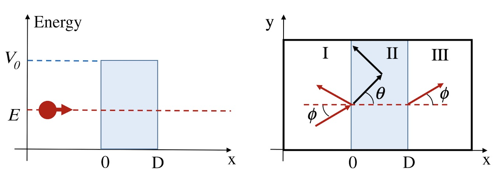
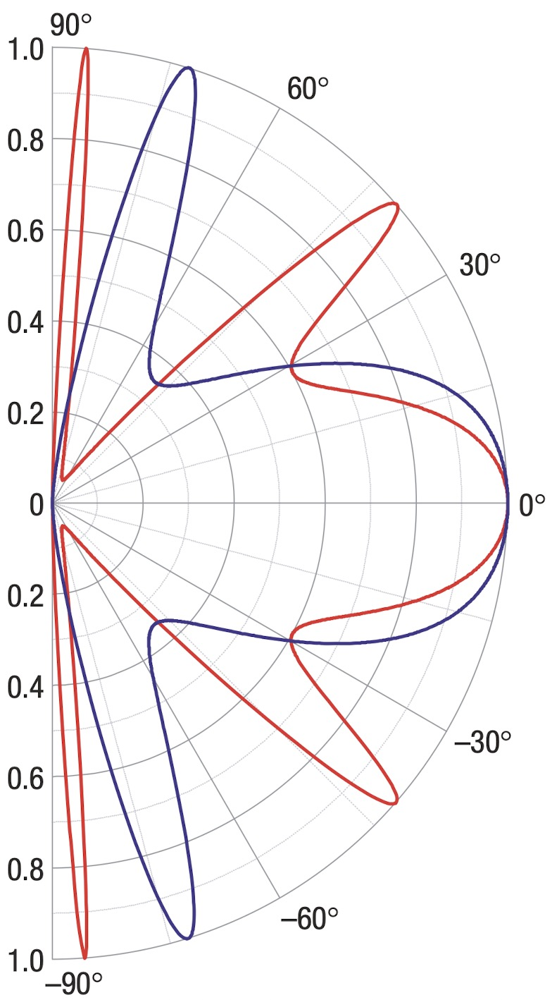
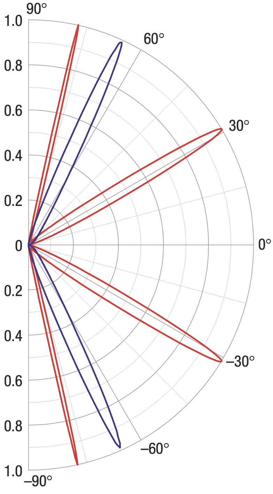

A wall that should stop youUna pared que debería detenerteEine Wand, die dich aufhalten sollte一堵本该挡住你的墙
Imagine a road with a wall across it. For an ordinary, non-relativistic particle, a barrier wide or high enough should block the route. A little of the wave can leak through quantum tunnelling, but the leak fades quickly. The Klein paradox appears when the Dirac equation is used: a sufficiently high barrier changes which energy branch is available inside it, and a wave that looks transmitted no longer behaves like an ordinary particle.Imagina una carretera con una muralla atravesada. Para una partícula ordinaria, no relativista, una barrera lo bastante ancha o alta debería bloquear el camino. Un poquito de la onda puede filtrarse por efecto túnel, pero esa filtración cae rápido. La paradoja de Klein aparece al usar la ecuación de Dirac: una barrera suficientemente alta cambia la rama de energía disponible en su interior, y una onda que parece transmitida deja de comportarse como una partícula común.Stell dir eine Straße mit einer querstehenden Mauer vor. Für ein gewöhnliches, nichtrelativistisches Teilchen sollte eine ausreichend breite oder hohe Barriere den Weg blockieren. Ein kleiner Teil der Welle kann durch Quantentunneln hindurchsickern, aber dieses Leck wird schnell kleiner. Das Klein-Paradoxon erscheint bei der Dirac-Gleichung: Eine hohe Barriere verändert den verfügbaren Energiezweig, und eine Welle, die wie eine transmittierte aussieht, verhält sich nicht mehr wie ein gewöhnliches Teilchen.想象一条路被一堵墙横向挡住。对于普通的非相对论粒子，足够宽或高的势垒应该会封住道路。量子隧穿可以让少量波函数渗过去，但这种渗透会很快减弱。使用狄拉克方程时，克莱因悖论出现了：足够高的势垒会改变内部可用的能量分支，于是看似透射的波不再像普通粒子那样运动。
The apparent excess reflection is not a machine producing more than one probability. The bookkeeping has identified the wrong channel: the barrier connects particle and antiparticle branches. In the full relativistic theory, the consistent language is holes and pair creation. The surprise is real, but the contradiction is only a warning that the simple picture has been stretched too far.La reflexión aparentemente mayor que uno no significa que la naturaleza produzca más de una probabilidad. El problema está en la contabilidad: se identificó mal el canal. La barrera conecta ramas de partícula y antipartícula. En la teoría relativista completa, el lenguaje correcto habla de huecos y creación de pares. La sorpresa es real, pero la contradicción solo avisa que la imagen simple quedó chica.Die scheinbar größere Reflexion bedeutet nicht, dass die Natur mehr als eine Wahrscheinlichkeit erzeugt. Die Buchhaltung hat den falschen Kanal identifiziert: Die Barriere verbindet Teilchen- und Antiteilchenzweige. In der vollständigen relativistischen Theorie spricht man konsistent von Löchern und Paarerzeugung. Die Überraschung ist echt, der Widerspruch zeigt jedoch nur, dass das einfache Bild nicht mehr ausreicht.看似大于一的反射并不意味着自然界产生了超过一的概率。问题出在记账方式：把透射通道认错了。势垒连接了粒子分支与反粒子分支。在完整的相对论理论中，正确的语言是空穴与成对产生。惊奇现象是真实的，但矛盾只说明简单图像已经不够用了。

Graphene brings the problem to the tableEl grafeno trae el problema a la mesaGraphen holt das Problem auf den Labortisch石墨烯把问题带到实验桌上
Graphene is a one-atom-thick carbon sheet arranged like a honeycomb. Near two special points in its electronic structure, its carriers behave like massless Dirac fermions. They are not real relativistic electrons: their characteristic speed is much smaller than the speed of light. But the equation has the same shape, so a flat sheet and electric gates can reproduce the essential choreography of the paradox.El grafeno es una lámina de carbono de un átomo de grosor, ordenada como un panal. Cerca de dos puntos especiales de su estructura electrónica, sus portadores se comportan como fermiones de Dirac sin masa. No son electrones relativistas reales: su velocidad característica es mucho menor que la de la luz. Pero la ecuación tiene la misma forma, así que una lámina y unas compuertas eléctricas pueden reproducir la coreografía esencial de la paradoja.Graphen ist eine nur ein Atom dicke Kohlenstoffschicht mit Wabenstruktur. In der Nähe zweier besonderer Punkte seiner elektronischen Struktur verhalten sich die Ladungsträger wie masselose Dirac-Fermionen. Es sind keine echten relativistischen Elektronen: Ihre charakteristische Geschwindigkeit ist viel kleiner als die Lichtgeschwindigkeit. Die Gleichung hat jedoch dieselbe Form, sodass eine dünne Schicht und elektrische Gatter die wesentliche Choreografie des Paradoxons nachbilden können.石墨烯是一层只有一个原子厚、排列成蜂窝状的碳。靠近电子结构中的两个特殊点时，载流子表现得像无质量狄拉克费米子。它们不是真正的相对论电子：特征速度远小于光速。但方程具有相同的形式，因此一片薄层和电栅极就能重现悖论的核心舞步。
A gate changes the electrostatic landscape and creates a region that acts as a barrier. A carrier arrives from one side, keeps its motion parallel to the edge, and must cross the gated strip. The barrier is the same in one and two layers; what changes is how the quantum state is tied to its direction of motion.Una compuerta cambia el paisaje electrostático y crea una región que funciona como barrera. El portador llega desde un lado, conserva el movimiento paralelo al borde y debe cruzar la franja controlada. La barrera puede ser la misma en una y dos capas; lo que cambia es cómo el estado cuántico queda unido a su dirección de movimiento.Ein Gatter verändert die elektrostatische Landschaft und erzeugt eine Region, die als Barriere wirkt. Ein Ladungsträger kommt von einer Seite, behält seine Bewegung parallel zum Rand bei und muss den gesteuerten Bereich durchqueren. Die Barriere kann in einer und zwei Schichten gleich sein; anders ist die Bindung des Quantenzustands an die Bewegungsrichtung.电栅极改变静电景观，形成一个充当势垒的区域。载流子从一侧到来，保持沿边界方向的运动，并必须穿过这条受控区域。一层和两层中的势垒可以相同；改变的是量子态如何与运动方向绑定。
Single layer: straight on, the wall turns transparentMonocapa: de frente, la pared se vuelve transparenteEine Schicht: Geradeaus wird die Wand durchsichtig单层：正面撞上去，墙反而变透明
In a single layer, the internal orientation of the electronic state — its pseudospin — turns with the direction of motion. For a path perpendicular to the barrier, the orientations on both sides line up. The result is perfect transmission at normal incidence, even for a high barrier. The carrier is not crossing because it has extra energy; reflection is forbidden in that ideal channel by the matching of motion and pseudospin.En la monocapa, la orientación interna del estado electrónico —su pseudospín— gira junto con la dirección de movimiento. Para una trayectoria perpendicular a la barrera, las orientaciones de ambos lados encajan. El resultado es transmisión perfecta en incidencia normal, incluso con una barrera alta. El portador no atraviesa porque tenga energía de sobra: en ese canal ideal, el ajuste entre movimiento y pseudospín impide la reflexión.In einer Schicht dreht sich die innere Orientierung des elektronischen Zustands — sein Pseudospin — mit der Bewegungsrichtung. Bei einem senkrechten Weg zur Barriere passen die Orientierungen auf beiden Seiten zusammen. Das Ergebnis ist perfekte Transmission bei senkrechtem Einfall, selbst bei einer hohen Barriere. Der Träger kommt nicht wegen überschüssiger Energie hindurch; in diesem idealen Kanal verbietet die Übereinstimmung von Bewegung und Pseudospin die Reflexion.在单层石墨烯中，电子态的内部方向——即赝自旋——会随运动方向转动。当路径垂直于势垒时，两侧的方向恰好匹配。结果是：即使势垒很高，正入射仍可完全透射。载流子并不是因为能量更多才穿过去；在这个理想通道里，运动与赝自旋的匹配禁止了反射。
For an oblique path, the match is no longer exact. Some of the wave reflects and some crosses. Yet the phase accumulated inside the barrier can line up again, producing resonant angles — like notes on a string that sound only for certain lengths. This is why an electrostatic barrier has trouble imprisoning carriers in single-layer graphene.Para una trayectoria inclinada, el encaje ya no es exacto. Parte de la onda se refleja y parte atraviesa. Pero la fase acumulada dentro de la barrera puede volver a alinearse y producir ángulos resonantes, como las notas de una cuerda que solo suenan para ciertas longitudes. Por eso una barrera electrostática tiene problemas para encerrar portadores en una monocapa.Bei einem schrägen Weg ist die Übereinstimmung nicht mehr exakt. Ein Teil der Welle wird reflektiert, ein Teil geht hindurch. Die innerhalb der Barriere gesammelte Phase kann jedoch wieder passen und Resonanzwinkel erzeugen — wie Töne einer Saite, die nur bei bestimmten Längen klingen. Deshalb kann eine elektrostatische Barriere Ladungsträger in einschichtigem Graphen nur schwer einsperren.对于倾斜路径，匹配不再精确。一部分波被反射，另一部分穿过。但波在势垒内部积累的相位可能再次对齐，产生共振角度——像琴弦只有在某些长度下才会发出特定音符。这就是静电势垒难以把载流子关在单层石墨烯中的原因。

Bilayer: the same road, a different turnBicapa: el mismo camino, otro giroZwei Schichten: Derselbe Weg, eine andere Drehung双层：同一条路，转法不同
In bilayer graphene, two honeycomb sheets are stacked with a shift. Near charge neutrality, the dispersion is approximately parabolic rather than linear. The carriers have an effective mass, but remain chiral: their internal state still remembers the direction of motion. The decisive difference is that the internal orientation makes two turns when the momentum makes one.En el grafeno bicapa, dos redes de panal se apilan con un desplazamiento. Cerca de la neutralidad de carga, la dispersión es aproximadamente parabólica en vez de lineal. Los portadores tienen una masa efectiva, pero siguen siendo quirales: su estado interno todavía recuerda la dirección de movimiento. La diferencia decisiva es que la orientación interna da dos vueltas cuando el momento da una.Beim zweischichtigen Graphen sind zwei Wabengitter gegeneinander verschoben gestapelt. Nahe der Ladungsneutralität ist die Dispersion annähernd parabolisch statt linear. Die Träger besitzen eine effektive Masse, bleiben aber chiral: Ihr innerer Zustand erinnert sich weiterhin an die Bewegungsrichtung. Der entscheidende Unterschied ist, dass die innere Orientierung zwei Umdrehungen macht, wenn der Impuls eine macht.双层石墨烯由两个错位堆叠的蜂窝晶格组成。在电荷中性点附近，色散近似为抛物线，而不是直线。载流子具有有效质量，但仍然具有手性：内部量子态依旧记得运动方向。决定性的区别是：动量转一圈时，内部方向会转两圈。
That extra turn changes the match at the interface. At normal incidence, the single layer favours passage while the bilayer favours reflection: the anti-Klein effect. For an ideal and sufficiently wide barrier, normal transmission is suppressed and falls with the width of the region. Oblique resonant channels return, but their maxima move away from the perpendicular direction.Ese giro extra cambia el encaje en la interfaz. En incidencia normal, la monocapa favorece el paso y la bicapa favorece la reflexión: el efecto anti-Klein. Para una barrera ideal y suficientemente ancha, la transmisión normal queda suprimida y cae con el ancho de la región. Vuelven a aparecer canales resonantes oblicuos, pero sus máximos se alejan de la dirección perpendicular.Diese zusätzliche Drehung verändert die Anpassung an der Grenzfläche. Bei senkrechtem Einfall begünstigt die einschichtige Probe den Durchgang, während die zweischichtige die Reflexion begünstigt: der Anti-Klein-Effekt. Bei einer idealen, ausreichend breiten Barriere wird die normale Transmission unterdrückt und nimmt mit der Breiten der Region ab. Schräge Resonanzkanäle bleiben möglich, aber ihre Maxima liegen nicht mehr in der senkrechten Richtung.这额外的一圈改变了界面处的匹配。在正入射时，单层有利于透射，而双层有利于反射，这就是反克莱因效应。对于理想且足够宽的势垒，正向透射会被抑制，并随区域宽度增加而下降。倾斜入射的共振通道仍然存在，但最大值移离垂直方向。

One barrier, two answersUna barrera, dos respuestasEine Barriere, zwei Antworten同一个势垒，两种回答
The transmission plots show the contrast directly. In the single layer, transmission is largest in the normal direction and develops side resonances. In the bilayer, the centre is dark and the maxima shift sideways. The lattice geometry is not decoration: it changes the phase that must match while the state crosses the interface.Los gráficos de transmisión muestran el contraste directamente. En la monocapa, la transmisión es máxima en la dirección normal y desarrolla resonancias laterales. En la bicapa, el centro queda oscuro y los máximos se desplazan hacia los lados. La geometría de la red no es decoración: cambia la fase que debe coincidir cuando el estado cruza la interfaz.Die Transmissionsdiagramme zeigen den Kontrast unmittelbar. In der einschichtigen Probe ist die Transmission in normaler Richtung am größten und entwickelt seitliche Resonanzen. In der zweischichtigen Probe bleibt das Zentrum dunkel, die Maxima wandern zur Seite. Die Gittergeometrie ist keine Dekoration: Sie verändert die Phase, die beim Überqueren der Grenzfläche zusammenpassen muss.透射图直接展示了这种对比。单层石墨烯在正入射方向透射最大，并出现侧向共振；双层石墨烯的中心变暗，最大值向两侧移动。晶格几何并非装饰：它改变了量子态穿过界面时必须匹配的相位。
This is an ideal model: ballistic transport, an approximately rectangular barrier, energies low compared with the interlayer coupling, and no mixing between graphene's two valleys. Disorder, a rough potential, contacts and trigonal warping alter a real device. The comparison remains useful because it separates the signature of chirality from the imperfections of fabrication.Este es un modelo ideal: transporte balístico, barrera aproximadamente rectangular, energías bajas frente al acoplamiento entre capas y ausencia de mezcla entre los dos valles del grafeno. El desorden, una barrera rugosa, los contactos y el trigonal warping modifican un dispositivo real. La comparación sigue siendo útil porque separa la firma de la quiralidad de las imperfecciones de fabricación.Das ist ein ideales Modell: ballistischer Transport, eine annähernd rechteckige Barriere, Energien unterhalb der dominanten Zwischenlagenkopplung und keine Mischung der beiden Täler. Unordnung, ein raues Potential, Kontakte und trigonal warping verändern ein reales Bauteil. Der Vergleich bleibt nützlich, weil er die Signatur der Chiralität von Fertigungsfehlern trennt.这是一个理想模型：弹道输运、近似矩形势垒、能量低于主要层间耦合，并且两个谷之间没有混合。无序、粗糙势垒、接触以及三角翘曲都会改变真实器件的曲线。这个比较仍然有用，因为它把手性的特征与制造缺陷区分开来。
In summaryEn resumenZusammengefasst总结
- The Klein paradox appears when a relativistic barrier connects particle and antiparticle branches.La paradoja de Klein aparece cuando una barrera relativista conecta ramas de partícula y antipartícula.Das Klein-Paradoxon erscheint, wenn eine relativistische Barriere Teilchen- und Antiteilchenzweige verbindet.当相对论势垒连接粒子与反粒子分支时，就会出现克莱因悖论。
- Single-layer graphene reproduces the Dirac structure and transmits perfectly at normal incidence.La monocapa reproduce la estructura de Dirac y transmite perfectamente en incidencia normal.Einschichtiges Graphen reproduziert die Dirac-Struktur und transmittiert bei senkrechtem Einfall perfekt.单层石墨烯重现狄拉克结构，并在正入射时完全透射。
- Bilayer graphene keeps chirality but its double winding suppresses normal transmission.La bicapa conserva la quiralidad, pero su giro doble suprime la transmisión normal.Zweischichtiges Graphen behält die Chiralität, aber sein doppeltes Winding unterdrückt die normale Transmission.双层石墨烯保留手性，但双重绕转会抑制正向透射。